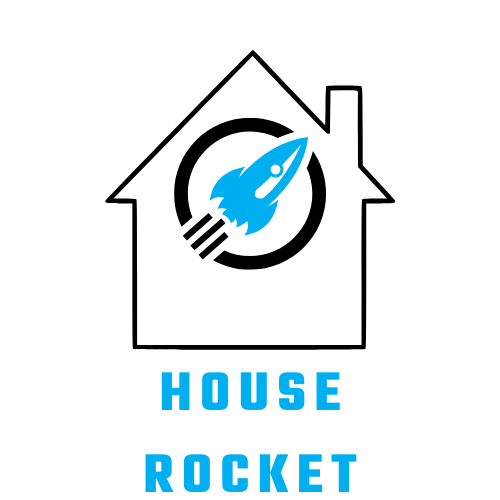

Clustering Projetc
A Análise da Personalidade do Cliente é uma análise detalhada dos clientes ideais de uma empresa. Ela ajuda uma empresa a entender melhor seus clientes e facilita a modificação de produtos de acordo com as necessidades, comportamentos e preocupações específicas de diferentes tipos de clientes. Aqui, em vez de gastar dinheiro para comercializar um novo produto para cada cliente no banco de dados da empresa, uma empresa pode analisar qual segmento de cliente tem maior probabilidade de comprar o produto e, então, comercializar o produto apenas naquele segmento específico.
Health Insurance Projetc
A Health insurance é uma seguradora que fornece seguro de saúde aos seus clientes, e agora busca vender um seguro de veículo. Um pesquisa então foi realizada com os clientes, que compraram o seguro saúde no ano passado, perguntando a cada um se teria interesse em adquirir o novo seguro. A seguradoda obteve retorno de 304 mil clientes sobre o interesse em adquirir um seguro veicular. O novo seguro foi desenvolvido, e está sendo ofertado aos interessados. Existem mais 76 mil clientes, entre novos e antigos, que não responderam a pesquisa. Entretanto, o call center, tem a capacidade de conter apenas alguns clientes. Assim a seguradora deve escolher uma forma de selecionar para quais clientes deve ligar. A equipe de vendas pode fazer um total de 20.000 chamadas, mas pode aumentar para 40.000. Levando em conta o problema apresentado, o cientista de dados (usando machine learning) deve fornecer uma lista ordenada desses novos clientes com base em em sua pontuação de propensão de comprar o novo seguro.

Projeto Rossmann
A Rossmann é uma das maiores redes de drogarias e perfumarias da Europa que opera em mais de 3.000 lojas em 7 países europeus. As vendas da Rossmann podem ser ifluenciadas por promoções, competição, feriados escolares e estaduais, sazonalidade, localidade, entre outros. Este projeto de Data Science tem como objetivo resolver a questão a seguir exigida pelo CEO da Rossmann: Qual a previsão de vendas das próximas seis semanas para cada loja, a fim de determinar a melhor alocação de recursos para cada renovação das lojas? Para responder ao CEO o método CRISP foi utilizado incluindo alguns modelos de Machine Learning.

House rocket project
A House Rocket é uma empresa fictícia que utiliza a tecnologia para tomar decisões
de compra e venda de imóveis. Este projeto de Ciência de Dados tem como objetivo
encontrar as melhores oportunidades de negócio para maximizar o faturamento da
empresa. A melhor estratégia é a compra de casas em ótimas condições por baixos
preços e a venda desses imóveis por um preço superior. Nesse projeto o cientista
de dados deve obter insights através da manipulação de dados para auxiliar as
melhores decisões da equipe de negócios.